China Employee Termination: The 3 Decisions Foreign Employers Must Make Before Noon
Key takeaways
- China termination risk is mostly an execution-quality problem, not a route-label problem.
- Foreign teams should make three explicit decisions early: route decision, evidence decision, and settlement decision.
- If any one of the three decisions is weak, dispute risk rises even when legal analysis appears acceptable.
- Pulse-style briefing structure helps non-China leaders act quickly with clearer ownership.
- Legal detail belongs in the appendix; practical controls should lead.
Pulse lead
If your team is handling a China termination today, there are three decisions you should lock before noon. Miss one, and you typically pay for it later in delay, escalation, or avoidable dispute.
This run rotates to a 3-decision briefing format for foreign clients: concise, impact-first, plain legal context first, and direct practical implications.
Plain-language legal context first
China’s Labor Contract Law defines termination boundaries and severance obligations. The implementation regulations and SPC interpretation affect how disputes assess evidence quality, procedural fairness, and consistency between what the employer says and what the case file shows. Practical translation for foreign employers: route legality, documentation, communication, and settlement execution must stay aligned through closure.
Decision 1: Route decision — “Is the path still legally fit for current facts?”
This is not a one-time checkbox. Route fit can change if new facts appear, protected-status concerns arise, or factual assumptions break.
What foreign teams should do now
- document route prerequisites in plain terms
- assign route owner + backup approver
- force re-check when facts shift
If missed: the case can continue on a stale route assumption and become fragile in dispute review.
Decision 2: Evidence decision — “Can we prove a coherent chronology?”
Many cases fail because records are plentiful but inconsistent. Decision quality depends on chronology coherence, not document volume.
What foreign teams should do now
- maintain owner-verified chronology index
- flag unresolved contradictions with SLA
- block employee-facing steps if critical gaps remain
If missed: legal theory may remain arguable, but defensibility weakens sharply.
Decision 3: Settlement decision — “Are payout logic and explanations fully aligned?”
Settlement failure often happens after signatures when payout mapping, timing, or tax explanations are unclear.
What foreign teams should do now
- lock itemized settlement worksheet
- require legal/payroll co-sign before commitments
- issue one controlled explanation pack
If missed: post-signature friction and reopen risk increase.
Practical implications for foreign employers
- HQ: ask teams for the 3-decision status, not long narrative memos.
- Regional HR: convert each decision into go/no-go gate with owner and due date.
- Payroll/finance: move upstream and co-own Decision 3 before communication starts.
- Managers: treat script discipline as compliance control, not communication preference.
Fast risk dashboard (for daily use)
- Route fit: Green / Amber / Red
- Evidence coherence: Green / Amber / Red
- Settlement clarity: Green / Amber / Red
- Escalation owner active: Yes / No
- Closure readiness: Complete / Incomplete
If any critical item is red, auto-hold progression.
Scenario snapshots
Snapshot A: Route changed, team paused
A protected-status fact surfaced late. Team reran Decision 1, halted progression, and updated route strategy. Outcome: slower but safer path.
Snapshot B: Evidence contradiction caught early
Chronology conflict surfaced before meeting. Team remediated record gaps and resumed with stronger file coherence.
Snapshot C: Settlement mismatch prevented
Payroll found payout mapping ambiguity pre-commitment. Co-sign lock resolved it before employee communication.
Daily SOP (3-decision flow)
- Open case and set Decision 1-3 baseline.
- Assign owners and SLAs to unresolved items.
- Run legal/payroll parallel check where needed.
- Block employee-facing actions on red states.
- Execute with exception log.
- Close only after payment proof and archive checks.
Required document checklist
- route memo + prerequisites
- chronology index + contradiction log
- script package + briefing confirmation
- settlement worksheet + tax note
- escalation matrix
- payment proof + reconciliation
- closure audit report
Exception handling (concise)
- route invalidated → rerun Decision 1
- evidence contradiction → hold and remediate
- script drift → corrected record + legal review
- payout ambiguity → relock Decision 3 package
- no decision authority → activate backup owner
System implementation notes
Track in workflow:
- decision state (1-3)
- owner + SLA + timestamp
- change log for route/evidence/settlement
- settlement lock version
- closure completeness score
Controls:
- hard stop on unresolved red decisions
- mandatory re-approval on route/settlement changes
- immutable logs for approvals and revisions
Common mistakes and prevention
- Mistake: route-only approval
Prevention: enforce full 3-decision gate
- Mistake: late payroll involvement
Prevention: co-sign before external commitment
- Mistake: closure at signature
Prevention: proof-based closure criteria
What to do this week
- Roll out a one-page 3-decision template.
- Define red-state auto-hold rules.
- Assign primary and backup decision owners.
- Add weekly review of repeat red-state causes.
- Recalibrate city-level controls with local counsel.
What to watch next
- continued scrutiny on procedural coherence
- persistent sensitivity around payout explanation quality
- city-level variance requiring periodic calibration
FAQ
Is this 3-decision model legally required?
No. It is an operational governance approach.
Can small teams use it?
Yes. This format is designed for small teams first.
Why does this help foreign clients?
It converts legal complexity into fast, owner-based operational choices.
Is negotiated termination always safer?
Not automatically; execution quality still determines risk.
When should external PRC counsel be mandatory?
High-risk unilateral routes, protected-status concerns, restructuring, and multi-city complexity.
Legal depth appendix
This brief relies on the PRC Labor Contract Law, State Council implementation regulations, and SPC labor-dispute interpretation. Together they support a consistent principle: legality and process coherence are jointly evaluated.
Disclaimer
Informational only; not legal, tax, or employment advice. Seek qualified PRC advice for specific cases.
Sources
- National People’s Congress — Labor Contract Law of the PRC (English), 2007-12-13: http://www.npc.gov.cn/zgrdw/englishnpc/Law/2007-12/13/content_1384064.htm
- State Council — Implementation Regulations of the Labor Contract Law (Decree No. 535), 2008-09-18: https://www.gov.cn/gongbao/content/2008/content_1124615.htm
- Supreme People’s Court — Interpretation on Labor Dispute Application Issues (Fa Shi [2020] No. 26), 2020-12-29: https://www.court.gov.cn/fabu/xiangqing/243981.html
- China Briefing / Dezan Shira — Employee Termination in China, 2025-10-17: https://www.china-briefing.com/news/employee-termination-in-china/
- Littler — Key Recent Developments in China’s Employment Law, 2024-03-20: https://www.littler.com/news-analysis/asap/key-recent-developments-chinas-employment-law-china-us-comparative-perspective
- PwC Worldwide Tax Summaries — PRC Individual Taxes on Personal Income, 2025-01-15: https://taxsummaries.pwc.com/peoples-republic-of-china/individual/taxes-on-personal-income
Governance cadence (to keep quality stable)
For foreign HQ teams, the 3-decision model should run on cadence, not ad hoc. Weekly: 30-minute review of active cases focused on unresolved red states, owner accountability, and next-step approvals. Monthly: 60-minute review of repeated failure patterns by entity and city. This cadence prevents “one good case, one bad case” volatility and creates repeatable quality.
KPI pack for leadership
- red-state count by decision (1/2/3)
- average red-state aging over SLA
- script-drift incidents per month
- settlement relock frequency
- closure lag (signature to verified close)
- post-close reopen rate in 30 days
If two or more KPIs degrade for two consecutive cycles, trigger a control recalibration with HR, legal, and payroll owners.
City-variance handling for foreign operators
Use one global baseline, then add local overlays where needed:
- local counsel escalation trigger
- local evidence sensitivity note
- local settlement communication note
- local dispute-timeline expectation
This allows consistency without ignoring real local variance.
Expanded scenario clinic
Scenario D: Decision 1 green, Decision 2 amber under time pressure
HQ requests immediate action. Evidence contradiction remains unresolved. Team holds progression despite schedule pressure, logs business impact, and escalates owner SLA. Result: short-term delay, lower long-term dispute exposure.
Scenario E: Decision 3 red after legal approval
Legal route remains valid, but payroll mapping for one payment component is unclear. Team pauses employee communication, relocks worksheet, and updates explanation script before meeting. Result: reduced post-signature confusion and fewer reopen queries.
Cross-functional ownership map
- HR case owner: decision-state updates and escalation initiation
- Legal owner: route integrity and evidentiary defensibility checks
- Payroll owner: settlement/tax coherence and payout timeline integrity
- Manager owner: script compliance and meeting-record discipline
- Control owner: closure evidence completeness and audit traceability
Quality guardrails before publish-level readiness
- No unresolved red-state in Decisions 1-3
- No missing owner on any active risk
- No mismatch between settlement worksheet and employee explanation text
- No closure declaration without payment proof and archive checks
Need local employment support in China?
If you need a compliance-first partner for hiring, payroll, and risk controls in China, China-Payroll.com can help evaluate the right setup.
Image Prompt Pack
Create a 16:9 hero image for article title: 'China Employee Termination: The 3 Decisions Foreign Employers Must Make Before Noon'. Scene: global operations team evaluating workforce model options for China market entry. Include motifs: decision matrix, org cha…